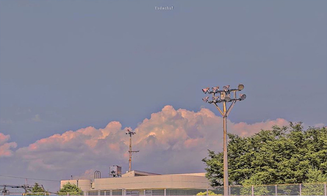
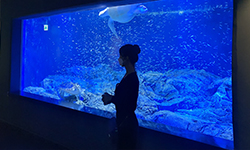
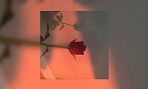

#같이공부해요 #studywithme #studyasmr
[𝑷𝒍𝒂𝒚𝒍𝒊𝒔𝒕] 🎧 적당히 리듬 타다가 훅에서 터지는❗️ 첫 곡 듣자마자 못 나갈걸? 💗 너무 좋아서 뒷목 잡는 후렴 위주 | 주말에 슬쩍 틀어놓으면 하루
조회수 230,932회
2021. 10. 23
achim29
구독자 100만명

𝐏𝐥𝐚𝐲𝐥𝐈𝐬𝐭 듣기만 해도 신나는 최근 케이팝 여돌 노래 모음 (2019~2021)
하루의 안식처_HAAN
30만회
주말에 슬쩍 틀어놓으면 하루 종일 기분이 좋아질걸? 💝 | 광고없는 노래모음
하루의 안식처_HAAN
1만회

도시 감성 국내 힙합/R&B
hyelee
20만회

눈과 겨울을 닮은 잔잔한 팝송❄ 눈내리는 도시의 분위기
Blue rain
13만회

[Playlist] ☃️일하면서 틀어놓기 딱 좋은 2시간 플레이리스트 | 광고없는 노래모음
퇴사하고싶다
1만회
[ 𝐩𝐥𝐚𝐲𝐥𝐢𝐬𝐭 ] 공부할 때 듣는 적당히 신나는 팝송
쌍떡잎식물
180만회
주인장이 최애하는 진짜 좋은 팝송 리스트 # 7
turning point music
28만회